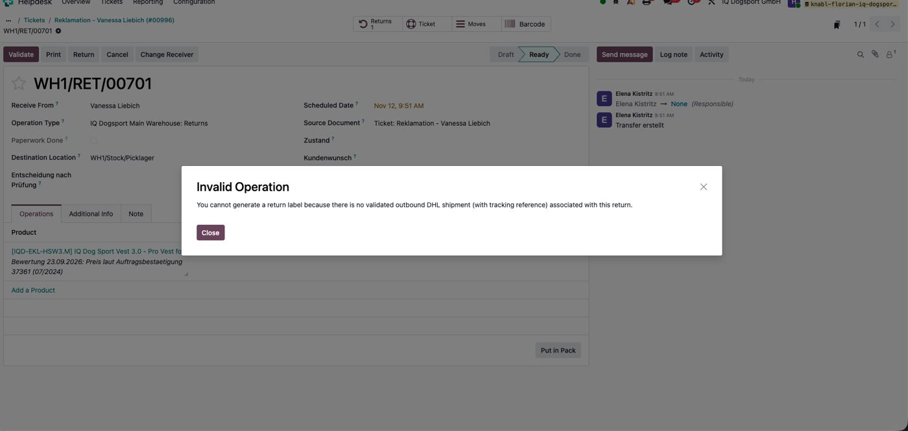
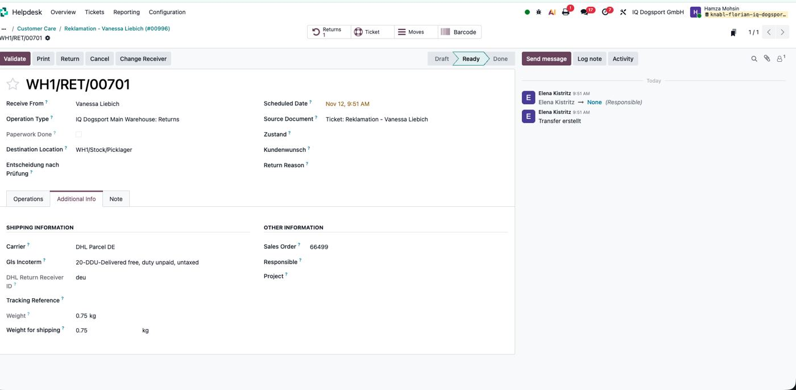
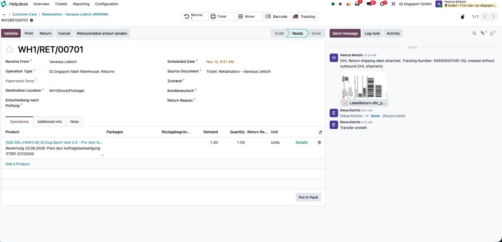

PDF version · Code · based on Return label email 29.10.
Status 12.11.2026: LIVE in Production. Tested on WH1/RET/00701 (ticket #00996, Vanessa Liebich): DHL return label 545935501591 created without outbound DHL shipment. Owner: Hamza.
1. Problem
For returns created from a Helpdesk ticket (complaint/warranty) the DHL return label could not be created:
- Button Retourenlabel senden was not visible.
- BrowseInfo buttons (Get Receivers / Print Return Label) failed: “You cannot generate a return label because there is no validated outbound DHL shipment (with tracking reference) associated with this return.”
Affected: every return without an outbound DHL delivery in Odoo – returns from tickets, orders shipped with GLS, orders from before the DHL go-live (27.10.2026).

2. Cause
| Part | Why it failed |
|---|---|
| Our button view | Hidden when not is_return_picking. Odoo only sets this for returns made with the Return button (field return_id). Returns from tickets have no return_id (checked: WH1/RET/00701 return_id empty, sale_id 16497). |
| Our server action v1 | Same check (not picking.is_return_picking) → “not an open return”. |
| BrowseInfo connector | The check “outbound DHL shipment with tracking” is only in its buttons: stock_picking.py → action_open_return_receiver_wizard and delivery_carrier.py → dhl_parcel_de_get_return_label. |
| DHL API call | dhl_request.py:753 create_return_shipment(carrier, picking) does not use the outbound shipment – only the return's contact (address, email, phone), dhl_return_receiver_id (default deu), sales order name/total (or return name / 10 €), weight (default 1 kg). |

3. Fix (automation only – no module, no new fields, BrowseInfo unchanged)
| Case | Created by | Result |
|---|---|---|
| 1 | Return button on a DHL delivery | BrowseInfo creates label – unchanged |
| 2 | Return button on old / GLS delivery (no DHL tracking) | our action creates label directly |
| 3 | Return from Helpdesk ticket (no return_id) | our action creates label directly |
3a. View “IQ – Send return label button”
not is_return_picking → not carrier_id. Buttons show on open incoming transfers with a carrier.
<!--
Odoo 19 - inherited view (PRODUCTION) - v2, live since 12.11.2026 (v1: 29.10.2026)
View Name: IQ – Send return label button
View Type: Form
Model: Transfer (stock.picking)
Inherited View: stock.picking.form (External ID stock.view_picking_form, the one WITHOUT parent)
View inheritance mode: Extension View
Access Rights: empty (all users)
name = id of the server action "Send return label" (production 1777 - NOT the staging id 1774)
v2: "not is_return_picking" replaced by "not carrier_id" - returns created from tickets have no return_id,
so is_return_picking is False and the button was hidden. The server action checks if it is really a return.
-->
<xpath expr="//header" position="inside">
<button name="1777" type="action" string="Retourenlabel senden" class="btn-primary" invisible="state == 'done' or picking_type_code != 'incoming' or not carrier_id or carrier_tracking_ref"/>
<button name="1777" type="action" string="Retourenlabel erneut senden" class="btn-secondary" confirm="Für diese Retoure wurde bereits ein Label erstellt. Erneut an den Kunden senden?" invisible="state == 'done' or picking_type_code != 'incoming' or not carrier_id or not carrier_tracking_ref"/>
</xpath>
3b. Server action “Send return label” (production 1777)
- “Return” =
is_return_pickingor operation type is a Returns type (return_picking_type_idof another type) – supplier receipts are still refused. - Outbound DHL shipment found (same lookup as BrowseInfo) →
print_return_label()as before. - Not found → carrier must be
dhl_parcel_de; receiver empty + customer in DE →deu; other countries → clear message (only Germany set up, see Finland / Retoure International). - Calls
env["dhl.request"].create_return_shipment(carrier, picking), saves PDF like BrowseInfo (LabelReturn-dhl_parcel_de-<tracking>.pdf, description “System generated DHL Return Label”), writes Tracking Reference, chatter note “(IQ: created without outbound DHL shipment)”. - Email part (template DE/EN, ticket, forms) unchanged.
# Odoo 19 - Server Action (PRODUCTION id 1777, staging id 1774)
# Name: Send return label - v2, live since 12.11.2026 (v1: 29.10.2026)
# Model: Transfer (stock.picking), Type: Execute Code, "Create Contextual Action" done
# Used by the buttons "Retourenlabel senden" / "Retourenlabel erneut senden" (view "IQ – Send return label button").
#
# 1. uses the existing LabelReturn PDF, or creates it:
# a) return HAS an outbound DHL shipment (tracking ref) -> BrowseInfo connector as before (print_return_label)
# b) NO outbound DHL shipment (returns from Helpdesk tickets, old/GLS orders)
# -> calls the connector's DHL request directly: env["dhl.request"].create_return_shipment(carrier, picking)
# (the "no validated outbound DHL shipment" check is only in the connector's buttons, not in this method)
# and saves the PDF exactly like the connector (name LabelReturn-..., description, chatter note)
# "Return" = created with the Return button (is_return_picking) OR operation type is a Returns type
# 2. picks template (DE) or (EN) by the customer's language
# 3. opens the email composer on the HELPDESK TICKET if the return belongs to one, otherwise on the return
# 4. attaches the DHL label + the reclamation form (Retourenschein) from the template
picking = record
def find_label(p):
return env["ir.attachment"].search([
("res_model", "=", "stock.picking"), ("res_id", "=", p.id),
("mimetype", "=", "application/pdf"), ("name", "ilike", "LabelReturn")], order="id desc", limit=1)
def dhl_source_picking(p):
# same lookup as the BrowseInfo connector uses for its check
src = env["stock.picking"]
for move in p.move_ids:
if move.origin_returned_move_id and move.origin_returned_move_id.picking_id:
src = move.origin_returned_move_id.picking_id
break
if not src and p.origin:
name = p.origin.replace("Return of", "").strip()
src = env["stock.picking"].search([("name", "=", name)], limit=1)
return src if (src and src.carrier_tracking_ref) else env["stock.picking"]
label = find_label(picking)
if not label:
# return = created with the Return button OR operation type is a Returns type (e.g. returns from tickets)
is_return_type = picking.is_return_picking or env["stock.picking.type"].search_count([("return_picking_type_id", "=", picking.picking_type_id.id)])
if not is_return_type or picking.picking_type_code != "incoming" or picking.state == "done":
raise UserError("%s is not an open return - no return label can be created." % picking.name)
carrier = picking.carrier_id
if not carrier:
raise UserError("No carrier on %s - please set DHL Parcel DE first." % picking.name)
if dhl_source_picking(picking):
# a) normal case - unchanged
picking.print_return_label()
else:
# b) no outbound DHL shipment -> create the return label directly
if carrier.delivery_type != "dhl_parcel_de":
raise UserError("%s has no outbound DHL shipment and the carrier is '%s'. Please set carrier DHL Parcel DE." % (picking.name, carrier.name))
partner = picking.partner_id
if not partner:
raise UserError("No customer (Receive From) on %s." % picking.name)
if not picking.dhl_return_receiver_id:
country = partner.country_id or partner.commercial_partner_id.country_id
if country and country.code == "DE":
picking.write({"dhl_return_receiver_id": "deu"})
else:
raise UserError("No DHL return receiver for %s (country %s). DHL returns are currently only set up for Germany - please create the label manually." % (picking.name, country.name if country else "-"))
result = env["dhl.request"].create_return_shipment(carrier, picking)
if not result or not result.get("label_b64"):
raise UserError("DHL did not return a label for %s. Please check the customer address." % picking.name)
tracking_no = result.get("tracking_number")
att = env["ir.attachment"].create({
"name": "%s-%s.pdf" % (carrier.get_return_label_prefix(), tracking_no),
"type": "binary",
"datas": result.get("label_b64"),
"res_model": "stock.picking",
"res_id": picking.id,
"mimetype": "application/pdf",
"description": "System generated DHL Return Label",
})
picking.write({"carrier_tracking_ref": tracking_no})
picking.message_post(
body="DHL Return shipping label attached. Tracking Number: %s (IQ: created without outbound DHL shipment)" % tracking_no,
attachment_ids=[att.id])
label = find_label(picking)
if not label:
raise UserError("The return label was created, but no 'LabelReturn' PDF was found on %s. Please check the chatter." % picking.name)
lang = (picking.partner_id.lang or "").lower()
key = "(DE)" if lang.startswith("de") else "(EN)"
template = env["mail.template"].search([("model", "=", "stock.picking"), ("name", "ilike", "Return label for customer " + key)], limit=1)
if not template:
raise UserError("Email template 'IQ – Return label for customer %s' not found." % key)
tmp = env["mail.compose.message"].create({
"model": "stock.picking", "res_ids": str([picking.id]),
"composition_mode": "comment", "template_id": template.id})
subject, body = tmp.subject, tmp.body
ticket = env["helpdesk.ticket"]
# .sudo(): ir.model.fields is readable for administrators only (access error for Elena on 29.10.)
if env["ir.model.fields"].sudo().search_count([("model", "=", "helpdesk.ticket"), ("name", "=", "picking_ids")]):
ticket = env["helpdesk.ticket"].search([("picking_ids", "in", picking.ids)], order="id desc", limit=1)
model, res_id = ("helpdesk.ticket", ticket.id) if ticket else ("stock.picking", picking.id)
composer = env["mail.compose.message"].create({
"model": model, "res_ids": str([res_id]), "composition_mode": "comment",
"subject": subject, "body": body,
"partner_ids": [(6, 0, [picking.partner_id.id])]})
# template attachments are not copied when the composer is created from code -> copy them
form_ids = [a.copy({"res_model": "mail.compose.message", "res_id": composer.id}).id for a in template.attachment_ids]
composer.write({"attachment_ids": [(4, label.id)] + [(4, i) for i in form_ids]})
# no tmp.unlink(): server actions may not delete mail.compose.message (access error); Odoo cleans it up
action = {
"type": "ir.actions.act_window",
"name": "Send return label" + (" – Ticket %s" % ticket.display_name if ticket else ""),
"res_model": "mail.compose.message", "res_id": composer.id,
"view_mode": "form", "views": [[False, "form"]], "target": "new"}

4. Tests (Production, 12.11.2026)
| Test | Expected | Result |
|---|---|---|
| WH1/RET/00701 – return from ticket, no outbound DHL | Label + IQ chatter note + tracking, email opens | ✓ label 545935501591 |
| Same return → “erneut senden” | No second label, email with same label | open |
| Return button on a DHL delivery | BrowseInfo label as before, no IQ note | open |
| Return button on GLS / old delivery | Label with IQ note | open |
| Return customer outside Germany | Message “only set up for Germany” | open |
| Same as test 1 as Elena | No access error | open |
5. Notes & limits
- Only countries with a DHL return receiver – currently Germany (
deu). Finland etc. need DHL Retoure International (procedure 53), requested from DHL sales (Peter Strauch). - Customer address must be complete (DHL validates; house number fallback “1” in the connector).
- After a BrowseInfo update: check that
create_return_shipmentstill exists (read-only grep below) and retest one ticket return. - DHL return labels are billed only when scanned – unused labels cost nothing.
- The ⚙ Actions menu entry “Send return label” comes from “Create Contextual Action”; can be removed without affecting the buttons.
Rollback: paste v1 back (server action: picking.print_return_label() only, check not picking.is_return_picking; view: not is_return_picking instead of not carrier_id) – see 29.10 page (code files there are now v2; v1 is in git history).
6. Read-only checks
-- Read only: psql -c "<query>"
-- 1. Is a transfer a "real" return (return_id) or created from a ticket (empty)?
SELECT sp.name, sp.return_id, sp.carrier_tracking_ref, sp.sale_id, sp.dhl_return_receiver_id FROM stock_picking sp WHERE sp.name = 'WH1/RET/00701';
-- 2. Carrier technical name (must be dhl_parcel_de) and Returns operation type link
SELECT id, name, delivery_type FROM delivery_carrier WHERE name ILIKE '%DHL%';
SELECT id, name->>'en_US' AS name, return_picking_type_id FROM stock_picking_type WHERE code = 'outgoing' AND active;
-- 3. Return labels created without outbound DHL shipment (chatter note)
SELECT m.date, sp.name, left(regexp_replace(m.body,'<[^>]+>','','g'),140) AS note FROM mail_message m JOIN stock_picking sp ON sp.id = m.res_id AND m.model = 'stock.picking' WHERE m.body LIKE '%created without outbound DHL shipment%' ORDER BY m.date DESC LIMIT 30;
-- Source lookup in the BrowseInfo connector (read only):
-- cd ~/src/user/bi_delivery_dhl_de_connector && grep -rn "no validated outbound DHL shipment" .
-- models/stock_picking.py action_open_return_receiver_wizard (button "Get Receivers")
-- models/delivery_carrier.py dhl_parcel_de_get_return_label (Print Return Label)
-- models/dhl_request.py:753 create_return_shipment(carrier, picking) -> no check, used by our action